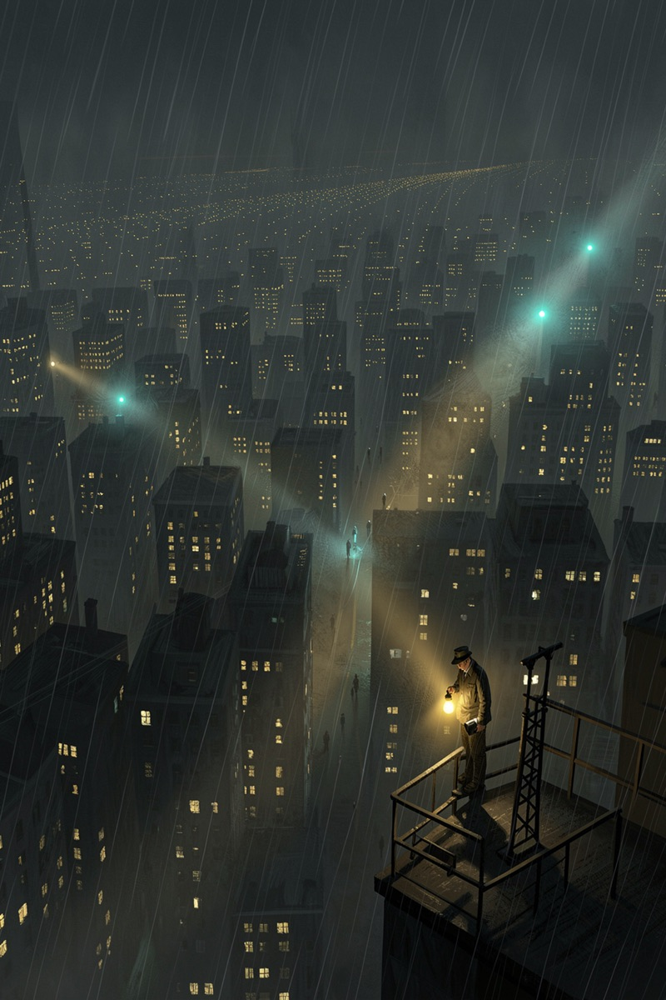
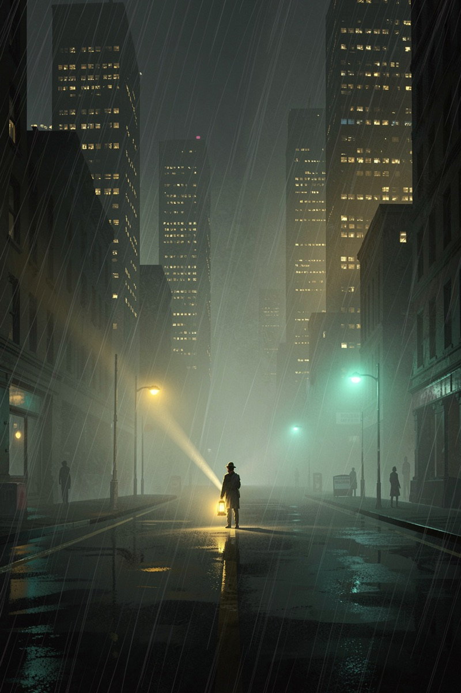
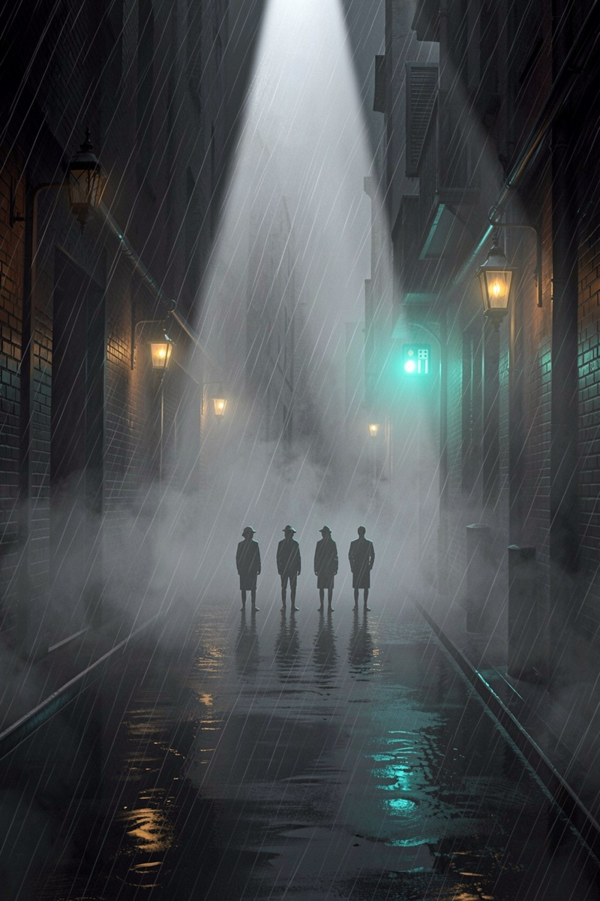
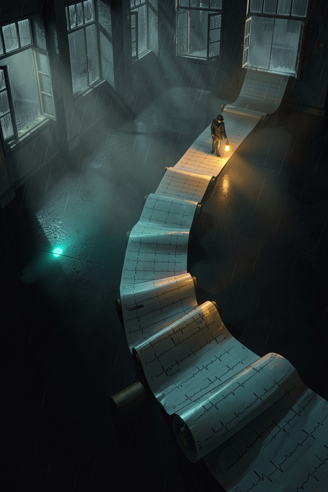

全馆唯一的活案:别的案等开奖,这案每天开庭——哨兵每天清晨重审一遍,答案挂在墙上,次日作废重验。
活案 · 每日 07:17 开庭
突然觉得模型变笨、变懒、答非所问——发个帖,评论区瞬间万人附议。它是圈内最顽固、复发率最高的流言:从来没被坐实,也从来没被扑灭。

你觉得它变笨了,凶手可能是——
四个嫌疑人站成一排,口供全一样。体感,从来不可审计。

厂商历史上确实自己承认过两次降质事故。所以"降智"不是妄想症——它真发生过。问题只剩一个:这一次,是真的吗?每一次体感爆发,都值得重新过一遍堂。
① 每天同一时刻重考。早上 07:17,哨兵自动让 6 个模型重考同一套题(四个切片),无人值守。
② 全程留痕。考完自动记账、自动存档、自动提交公开仓——任何人随时可查每一天的卷子。
③ 时序说话。单日成绩有噪声,连成曲线才是证词:体感不可审计,时序可以。
三类判分就是三枚指纹——体感只会喊"它变笨了",指纹能说出它哪里变了。

哨兵今天全绿,不代表你的体感是错觉——它代表:API 这头没变,锅多半在你的客户端、你的中转、或你的提示词。排除法,也是破案。
降智不是一桩案件,是天气。所以这案没有开奖日——墙上挂的是一枚活章,每天清晨自动刷新。今天的答案,明早作废重验。